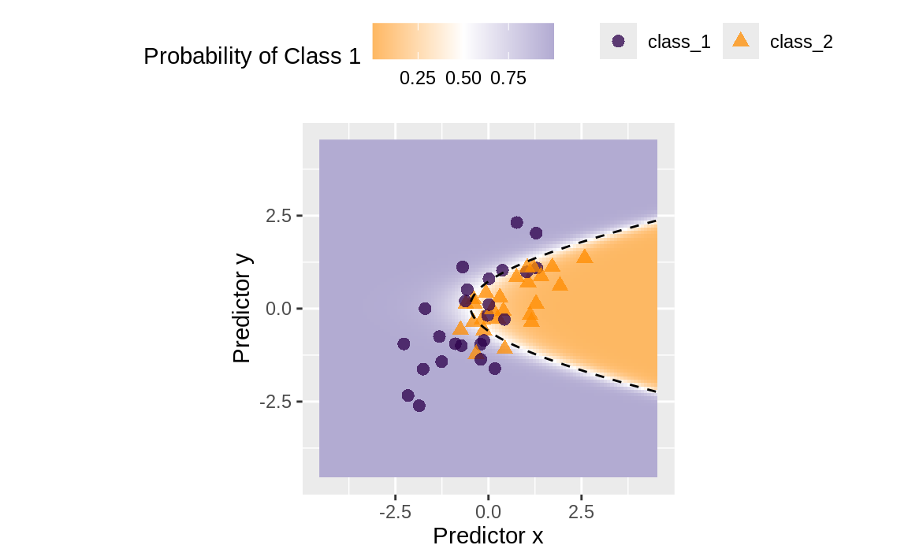
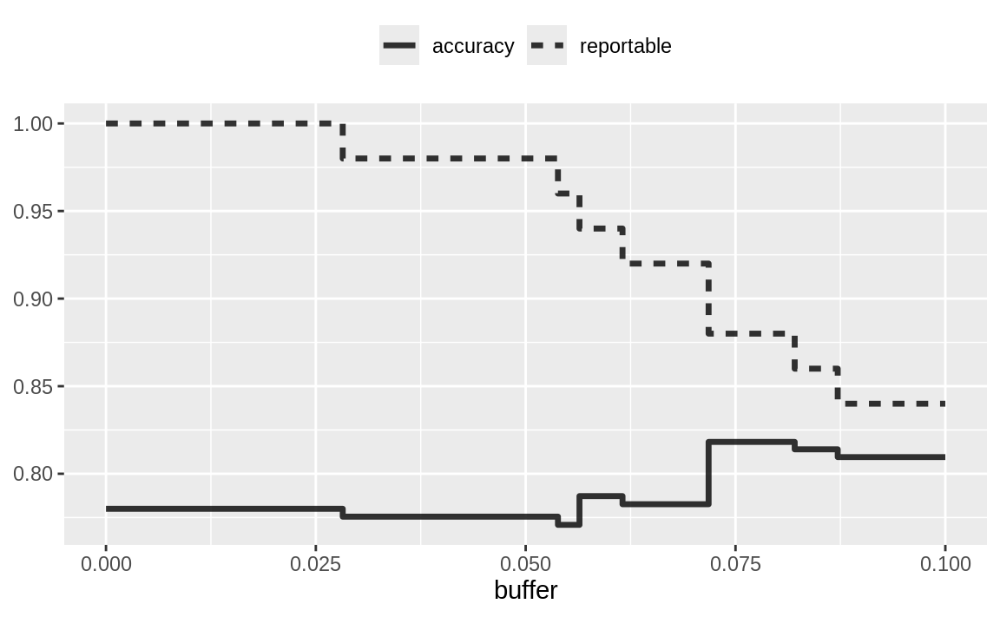
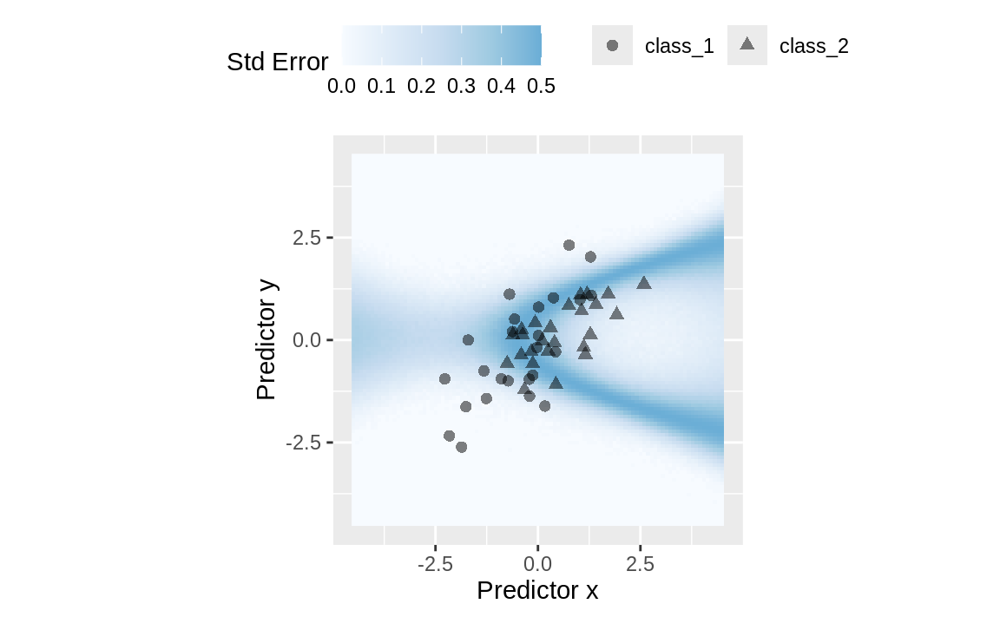
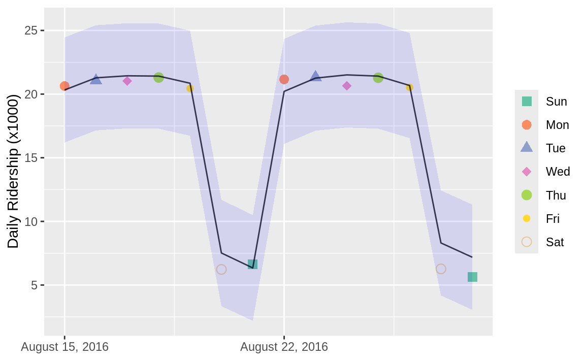
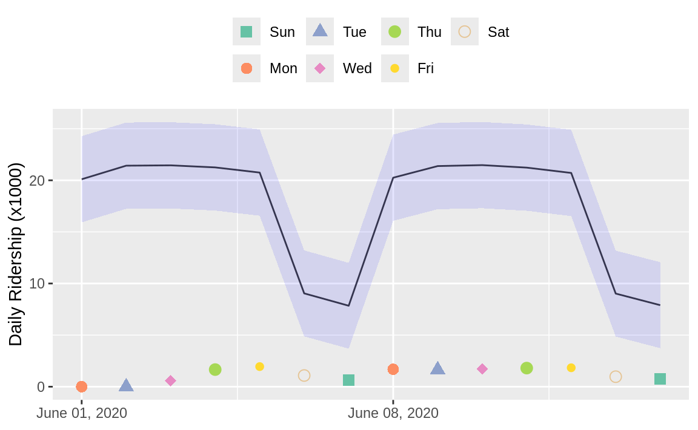
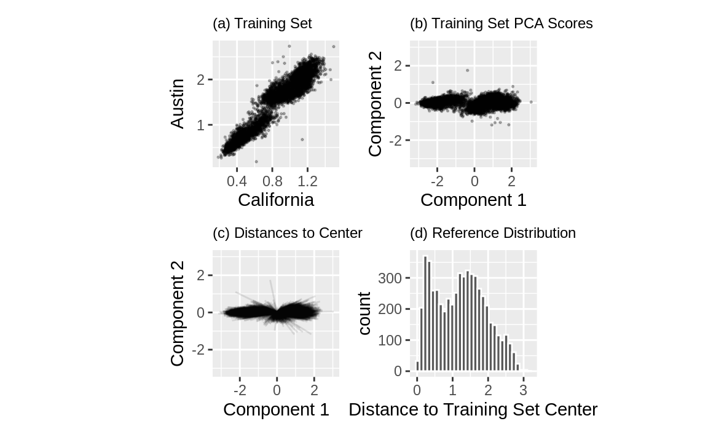
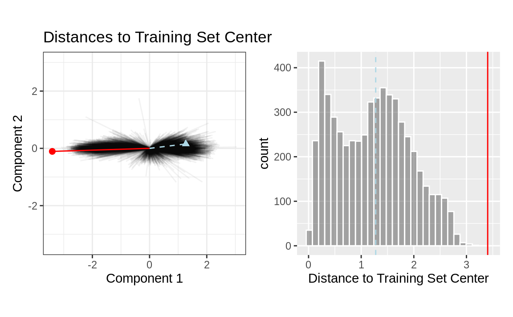
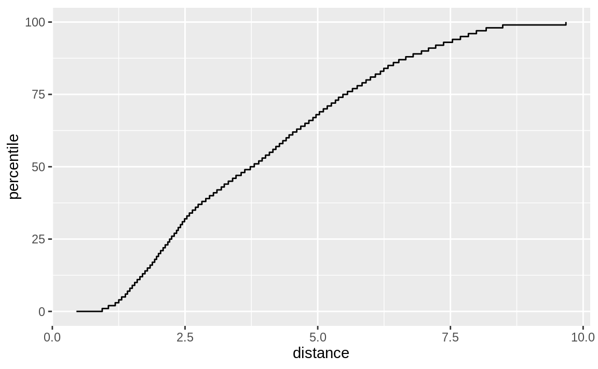

library(tidymodels)
#> ── Attaching packages ─────────────────────────────────── tidymodels 1.4.1 ──
#> ✔ broom 1.0.11 ✔ recipes 1.3.1
#> ✔ dials 1.4.2 ✔ rsample 1.3.1
#> ✔ dplyr 1.1.4 ✔ tailor 0.1.0
#> ✔ ggplot2 4.0.1 ✔ tidyr 1.3.1
#> ✔ infer 1.0.9 ✔ tune 2.0.1
#> ✔ modeldata 1.5.1 ✔ workflows 1.3.0
#> ✔ parsnip 1.4.0 ✔ workflowsets 1.1.1
#> ✔ purrr 1.2.0 ✔ yardstick 1.3.2
#> ── Conflicts ────────────────────────────────────── tidymodels_conflicts() ──
#> ✖ purrr::discard() masks scales::discard()
#> ✖ dplyr::filter() masks stats::filter()
#> ✖ dplyr::lag() masks stats::lag()
#> ✖ recipes::step() masks stats::step()
tidymodels_prefer()
simulate_two_classes <-
function(n, error = 0.1, eqn = quote(-1 - 2 * x - 0.2 * x^2 + 2 * y^2)) {
# Slightly correlated predictors
sigma <- matrix(c(1, 0.7, 0.7, 1), nrow = 2, ncol = 2)
dat <- MASS::mvrnorm(n = n, mu = c(0, 0), Sigma = sigma)
colnames(dat) <- c("x", "y")
cls <- paste0("class_", 1:2)
dat <-
as_tibble(dat) %>%
mutate(
linear_pred = !!eqn,
# Add some misclassification noise
linear_pred = linear_pred + rnorm(n, sd = error),
prob = binomial()$linkinv(linear_pred),
class = ifelse(prob > runif(n), cls[1], cls[2]),
class = factor(class, levels = cls)
)
dplyr::select(dat, x, y, class)
}
set.seed(1901)
training_set <- simulate_two_classes(200)
testing_set <- simulate_two_classes(50)19 When Should You Trust Your Predictions ?
预测模型几乎总能在给定输入数据的情况下生成预测结果。然而，在许多情况下，这种预测可能是不合适的。当新数据点明显超出用于构建模型的数据范围时，进行预测可能属于不当的外推行为。更典型的例子是，当模型被应用于完全不同的情境时，其预测结果同样可能不适用。例如，第14章中使用的细胞分割数据，旨在判断人类乳腺癌细胞能否在图像中被准确分离。但若将基于这些数据建立的模型直接套用到胃细胞上以实现相同目的，则显然是不恰当的——尽管我们或许能得出一个预测结果，但它很可能无法适用于不同类型的细胞。
本章探讨了两种用于量化预测潜在质量的方法：
模糊区域：利用预测值提醒用户，结果可能存在疑问。
适用性：通过预测变量来衡量新样本的外推程度（如有）。
Equivocal Results
在某些情况下，与预测相关的不确定性程度过高，以至于无法信任。
如果模型结果显示你有51%的几率感染了新冠病毒，自然会对此诊断抱持一定怀疑态度。事实上，监管机构通常要求许多医学诊断都设有“模棱两可区域”。这一区域指的是某些结果范围，在此范围内，检测结果不应直接告知患者——例如，某些新冠检测结果过于模糊，无法明确报告给患者。具体案例可参见Danowski等人（1970）及Kerleguer等人（2003）。同样的概念同样适用于那些并非专门用于医学诊断的模型。
让我们使用一个能够模拟具有两个类别和两个预测变量（x 和 y）的分类数据的函数。真实模型是一个逻辑回归模型，其方程为：
\[ \mathrm{logit}(p) = -1 - 2x - \frac{x^2}{5} + 2y^2 \]
这两个预测变量服从相关系数为0.70的双变量正态分布。我们将创建一个包含200个样本的训练集，以及一个包含50个样本的测试集：
我们采用贝叶斯方法估计了一个逻辑回归模型（对参数使用了默认的高斯先验分布）：
two_class_mod <-
logistic_reg() %>%
set_engine("stan", seed = 1902) %>%
fit(class ~ . + I(x^2) + I(y^2), data = training_set)
print(two_class_mod, digits = 3)
#> parsnip model object
#>
#> stan_glm
#> family: binomial [logit]
#> formula: class ~ . + I(x^2) + I(y^2)
#> observations: 200
#> predictors: 5
#> ------
#> Median MAD_SD
#> (Intercept) 1.092 0.287
#> x 2.290 0.423
#> y 0.314 0.354
#> I(x^2) 0.077 0.307
#> I(y^2) -2.465 0.424
#>
#> ------
#> * For help interpreting the printed output see ?print.stanreg
#> * For info on the priors used see ?prior_summary.stanregFigure 1 中，拟合的类别边界被叠加在测试集上。最接近类别边界的数据点不确定性最高——如果这些点的值稍有变化，其预测的类别可能会随之改变。一种简单的排除某些结果的方法是：若数据点的值位于50%（或特定情境下的适当概率阈值）附近的某个范围内，则将其标记为“模棱两可”。根据模型所应用的具体问题，这可能意味着我们需要采集更多测量数据，或者在得出可靠预测之前，还需获取更多信息。

我们可以根据去除不确定结果后性能的提升情况，来确定带宽的宽度。然而，我们还应估算可报告率（即预期可用结果的比例）。例如，在实际应用中，即使模型表现完美，但如果仅对2%的通过样本发布预测，也是毫无意义的。
让我们使用测试集来确定提升性能与确保足够可报告结果之间的平衡。预测是通过以下方式生成的：
test_pred <- augment(two_class_mod, testing_set)
test_pred %>% head()
#> # A tibble: 6 × 6
#> .pred_class .pred_class_1 .pred_class_2 x y class
#> <fct> <dbl> <dbl> <dbl> <dbl> <fct>
#> 1 class_2 0.0256 0.974 1.12 -0.176 class_2
#> 2 class_1 0.555 0.445 -0.126 -0.582 class_2
#> 3 class_2 0.00620 0.994 1.92 0.615 class_2
#> 4 class_2 0.472 0.528 -0.400 0.252 class_2
#> 5 class_2 0.163 0.837 1.30 1.09 class_1
#> 6 class_2 0.0317 0.968 2.59 1.36 class_2借助tidymodels，probably包中包含用于不确定区间的函数。对于两类情况，make_two_class_pred()函数会创建一个类似因子的列，其中包含带有不确定区间的预测类别：
library(probably)
lvls <- levels(training_set$class)
test_pred <-
test_pred %>%
mutate(.pred_with_eqz = make_two_class_pred(.pred_class_1, lvls, buffer = 0.15))
test_pred %>% count(.pred_with_eqz)
#> # A tibble: 3 × 2
#> .pred_with_eqz n
#> <clss_prd> <int>
#> 1 [EQ] 9
#> 2 class_1 20
#> 3 class_2 21位于 \(0.50 ± 0.15\) 的值被赋予[EQ]。在这个示例中，符号[EQ]并不是一个因子水平，而是该列的一个属性。
由于因子水平与原始数据相同，因此可以准确地计算混淆矩阵及其他统计指标。在使用yardstick包中的标准函数时，模棱两可的结果会被转换为NA，并且不会用于基于硬类别预测的计算中。请注意这些混淆矩阵之间的差异：
# All data
test_pred %>% conf_mat(class, .pred_class)
#> Truth
#> Prediction class_1 class_2
#> class_1 20 6
#> class_2 5 19
# Reportable results only:
test_pred %>% conf_mat(class, .pred_with_eqz)
#> Truth
#> Prediction class_1 class_2
#> class_1 17 3
#> class_2 5 16同时，还提供了一个is_equivocal()函数，用于从数据中筛选出这些行。
模糊区有助于提高准确性吗？让我们来看看不同缓冲区大小的情况，如 Figure 2 所示：
# A function to change the buffer then compute performance.
eq_zone_results <- function(buffer) {
test_pred <-
test_pred %>%
mutate(.pred_with_eqz = make_two_class_pred(.pred_class_1, lvls, buffer = buffer))
acc <- test_pred %>% accuracy(class, .pred_with_eqz)
rep_rate <- reportable_rate(test_pred$.pred_with_eqz)
tibble(accuracy = acc$.estimate, reportable = rep_rate, buffer = buffer)
}
# Evaluate a sequence of buffers and plot the results.
map(seq(0, .1, length.out = 40), eq_zone_results) %>%
list_rbind() %>%
pivot_longer(c(-buffer), names_to = "statistic", values_to = "value") %>%
ggplot(aes(x = buffer, y = value, lty = statistic)) +
geom_step(linewidth = 1.2, alpha = 0.8) +
labs(y = NULL, lty = NULL) +
theme(legend.position = "top")

Figure 2 向我们展示了，虽然准确率提高了几个百分点，但代价却是近10%的预测结果无法使用！这种折衷方案的价值，取决于模型预测的具体用途。
本次分析着重于利用预测的类别概率来剔除异常点，因为这是分类模型中衡量不确定性的基本指标。相比之下，更优的做法是采用类别概率的标准误差。由于我们使用的是贝叶斯模型，所得到的概率估计实际上正是后验预测分布的均值——换句话说，贝叶斯模型为我们提供了类别概率的整个分布。通过计算这一分布的标准差，我们便能获得该概率预测的标准误差。在大多数情况下，这一标准误差与类别概率的均值呈直接关联。大家可能还记得，对于一个伯努利随机变量，其概率为 \(p\)，方差恰好是 \(p(1 - p)\)。正因如此，当概率为50%时，标准误差达到最大值。因此，与其单纯依据类别概率判定结果模棱两可，我们不妨改用预测标准误差作为筛选的临界值。
预测标准误差的一个重要方面是，它不仅考虑了类别概率，还特别关注那些存在显著外推或异常预测变量值的情况，此时标准误差可能会增大。使用预测标准误差的益处在于，它不仅能反映预测的不确定性，还能有效识别出存在问题的预测结果。我们之所以采用贝叶斯模型，正是因为它能自然地估算预测标准误差——这一点并非所有模型都能做到。对于我们的测试集，通过设置type = "pred_int"，将生成上下限；而std_error则会额外添加一列，显示这一数值。以80%的置信区间为例：
test_pred <-
test_pred %>%
bind_cols(
predict(two_class_mod, testing_set, type = "pred_int", std_error = TRUE)
)对于我们模型和数据表现良好的示例，Figure 3 展示了整个空间中的预测标准误差：

使用标准误差作为衡量指标以排除无法预测的样本，同样适用于具有数值结果的模型。然而，正如下一节所示，这种方法并非总是有效。
Determining Model Applicability
模糊区域试图根据模型输出来衡量预测的可靠性。然而，模型统计量（如预测的标准误差）可能无法有效评估外推法带来的影响，因此我们需要另一种方法，以判断是否可信地依赖该预测，并回答：“我们的模型是否适用于预测特定的数据点？”让我们以 Kuhn 和 Johnson（2019）中广泛使用的芝加哥火车数据为例，该数据最初在第2.2节中展示。我们的目标是预测每天进入克拉克与湖站火车站的顾客数量。
modeldata 包（一个包含示例数据集的 tidymodels 包）中的数据集，涵盖了 2001年1月22日至2016年8月28日之间的每日数值。让我们使用数据的最后两周创建一个小规模的测试集：
主要的预测因子包括不同火车站（如克拉克站和湖站）的历史客流量数据，以及日期信息。这些客流量预测因子之间存在高度相关性。在接下来的模型中，日期列将被扩展为多个新特征，而客流量预测因子则通过偏最小二乘法（PLS）成分来表示。正如我们在第16.5.2节中所讨论的，PLS（Geladi 和 Kowalski 1986）是主成分分析的一种有监督版本，它不仅能消除新特征间的相关性，还能有效预测目标数据。
使用预处理后的数据，我们拟合了一个标准线性模型：
base_recipe <-
recipe(ridership ~ ., data = Chicago_train) %>%
# Create date features
step_date(date) %>%
step_holiday(date, keep_original_cols = FALSE) %>%
# Create dummy variables from factor columns
step_dummy(all_nominal()) %>%
# Remove any columns with a single unique value
step_zv(all_predictors()) %>%
step_normalize(!!!stations) %>%
step_pls(!!!stations, num_comp = 10, outcome = vars(ridership))
lm_spec <-
linear_reg() %>%
set_engine("lm")
lm_wflow <-
workflow() %>%
add_recipe(base_recipe) %>%
add_model(lm_spec)
set.seed(1902)
lm_fit <- fit(lm_wflow, data = Chicago_train)数据在测试集上的拟合效果如何？我们可以对测试集使用predict()方法，以同时获得预测值和预测区间：
res_test <-
predict(lm_fit, Chicago_test) %>%
bind_cols(
predict(lm_fit, Chicago_test, type = "pred_int"),
Chicago_test
)
res_test %>% select(date, ridership, starts_with(".pred"))
#> # A tibble: 14 × 5
#> date ridership .pred .pred_lower .pred_upper
#> <date> <dbl> <dbl> <dbl> <dbl>
#> 1 2016-08-15 20.6 20.3 16.2 24.5
#> 2 2016-08-16 21.0 21.3 17.1 25.4
#> 3 2016-08-17 21.0 21.4 17.3 25.6
#> 4 2016-08-18 21.3 21.4 17.3 25.5
#> 5 2016-08-19 20.4 20.9 16.7 25.0
#> 6 2016-08-20 6.22 7.52 3.34 11.7
#> # ℹ 8 more rows
res_test %>% rmse(ridership, .pred)
#> # A tibble: 1 × 3
#> .metric .estimator .estimate
#> <chr> <chr> <dbl>
#> 1 rmse standard 0.865这些是相当不错的结果。 Figure 4 展示了预测结果，并附有95%的预测区间。

鉴于乘客数量的规模，对于这样一个简单的模型来说，这些结果显得尤为出色。如果将该模型投入实际应用，它在几年后的2020年6月表现会如何？事实上，该模型成功地做出了预测——毕竟，作为预测模型，只要输入数据充足，几乎总是能给出准确的结果：
# load("Books/Tidy Modeling with R/Rdata/Chicago_2020.RData")
load("Rdata/Chicago_2020.RData")
res_2020 <-
predict(lm_fit, Chicago_2020) %>%
bind_cols(
predict(lm_fit, Chicago_2020, type = "pred_int"),
Chicago_2020
)
res_2020 %>% select(date, contains(".pred"))
#> # A tibble: 14 × 4
#> date .pred .pred_lower .pred_upper
#> <date> <dbl> <dbl> <dbl>
#> 1 2020-06-01 20.1 15.9 24.3
#> 2 2020-06-02 21.4 17.2 25.6
#> 3 2020-06-03 21.5 17.3 25.6
#> 4 2020-06-04 21.3 17.1 25.4
#> 5 2020-06-05 20.7 16.6 24.9
#> 6 2020-06-06 9.04 4.88 13.2
#> # ℹ 8 more rows尽管这些数据远远超出了原始训练集的时间范围，但预测区间的大致宽度却基本相同。然而，考虑到2020年全球爆发的疫情，这些数据的表现可谓惨不忍睹：
res_2020 %>% select(date, ridership, starts_with(".pred"))
#> # A tibble: 14 × 5
#> date ridership .pred .pred_lower .pred_upper
#> <date> <dbl> <dbl> <dbl> <dbl>
#> 1 2020-06-01 0.002 20.1 15.9 24.3
#> 2 2020-06-02 0.005 21.4 17.2 25.6
#> 3 2020-06-03 0.566 21.5 17.3 25.6
#> 4 2020-06-04 1.66 21.3 17.1 25.4
#> 5 2020-06-05 1.95 20.7 16.6 24.9
#> 6 2020-06-06 1.08 9.04 4.88 13.2
#> # ℹ 8 more rows
res_2020 %>% rmse(ridership, .pred)
#> # A tibble: 1 × 3
#> .metric .estimator .estimate
#> <chr> <chr> <dbl>
#> 1 rmse standard 17.2你可以在 Figure 5 中直观地看到这种糟糕的模型表现。

线性回归的置信区间和预测区间会随着数据逐渐偏离训练集中心而扩大。不过，这种影响并不显著到足以表明这些预测结果不佳。有时，模型生成的统计数据并不能很好地衡量预测的质量。
可以通过一种辅助方法来避免这种情况，该方法能够量化模型对任何新预测的适用性（即模型的适用性域）。目前已有多种计算适用性域模型的方法，例如Jaworska、Nikolova-Jeliazkova和Aldenberg（2005），或Netzeva等人（2005）。而本章采用的方法则是一种较为简单的无监督学习法，旨在衡量新数据点与训练数据之间的偏离程度——如果有的话。
想法是，为预测结果附上一个评分，用以衡量新数据点与训练集的相似程度。
一种行之有效的方法是将主成分分析（PCA）应用于数值型预测变量。我们将以加州站和奥斯汀站的客流量对应的两个预测变量为例，来演示这一过程。训练集如 Figure 6 中的(a)面板所示。这些站点的客流量数据高度相关，散点图中显示的两种分布分别对应周末和工作日的客流量情况。
第一步是对训练数据进行PCA分析。Figure 6 中的(b)面板展示了训练集的PCA得分。接下来，我们利用这些结果，计算每个训练集数据点到PCA数据中心的距离（ Figure 6 的(c)面板）。随后，我们可以借助这一参考分布（ Figure 6 的(d)面板），评估某个数据点偏离训练数据主流的程度。

对于新样本，我们会计算其PCA得分，并同时确定它与训练集中心的距离。
然而，当一个新样本的距离为X时，这究竟意味着什么？由于不同数据集的PCA成分可能具有不同的取值范围，因此很难明确界定“距离过大”这一概念。
一种方法是将训练集数据的距系列为“正常”范围。对于新样本，我们可以根据其与参考分布（来自训练集）中距离范围的对比情况，判断新样本的异常程度。此外，还可为新样本计算一个百分位数，以反映有多少训练集样本比新样本更不极端。
90%的百分位数意味着，训练集中的大部分数据比新样本更接近数据中心。
Figure 7 中的图表将测试集样本（三角形和虚线）与2020年样本（圆形和实线），按其与训练集的PCA距离进行了叠加显示。

测试集的设定点距离为1.28，位于训练集分布的第51.8百分位，表明它恰好处于训练集的主流范围内。
而2020年的样本则比训练集中的任何样本都更远离中心（百分位达100%），这说明该样本极为极端，其对应的预测结果将属于严重外推范畴（因此很可能不应予以报告）。
“applicable”包可以使用PCA开发一个适用性域模型。我们将以过去20期的车站客流量预测因子作为PCA分析的输入。此外，还有一个名为“阈值”的参数，用于确定在距离计算中使用多少个主成分。在本例中，我们将使用一个较大的值，表明应选用足够多的主成分，以涵盖客流量预测因子中99%的变异情况。
library(applicable)
pca_stat <- apd_pca(~.,
data = Chicago_train %>% select(one_of(stations)),
threshold = 0.99
)
pca_stat
#> # Predictors:
#> 20
#> # Principal Components:
#> 9 components were needed
#> to capture at least 99% of the
#> total variation in the predictors.autoplot()方法用于绘制参考分布。它有一个可选参数，用于指定要绘制的数据。我们将添加一个距离值，以仅绘制训练集的距离分布。这段代码生成了 Figure 8 中的图表：

autoplot() method on an applicable object
X轴显示距离的数值，Y轴则标示分布的百分位数。例如，训练集样本中有一半的距离小于3.7。
要计算新数据的百分位数，score()函数的工作方式与predict()相同：
score(pca_stat, Chicago_test) %>% select(starts_with("distance"))
#> # A tibble: 14 × 2
#> distance distance_pctl
#> <dbl> <dbl>
#> 1 4.88 66.7
#> 2 5.21 71.4
#> 3 5.19 71.1
#> 4 5.00 68.5
#> 5 4.36 59.3
#> 6 4.10 55.2
#> # ℹ 8 more rows这些看起来相当合理。以下是2020年的数据：
score(pca_stat, Chicago_2020) %>% select(starts_with("distance"))
#> # A tibble: 14 × 2
#> distance distance_pctl
#> <dbl> <dbl>
#> 1 9.39 99.8
#> 2 9.40 99.8
#> 3 9.30 99.7
#> 4 9.30 99.7
#> 5 9.29 99.7
#> 6 10.1 1
#> # ℹ 8 more rows2020年的距离值表明，这些预测值超出了模型在训练过程中所见的绝大多数数据范围。因此，应将这些值标记出来，以确保相关预测要么完全不被报告，要么需持审慎态度看待。
本次分析的一个重要方面涉及用于构建适用性域模型的预测变量选择。在我们的分析中，我们直接使用了原始的预测变量列，但在实际建模时，则改用PLS得分特征。那么，apd_pca()函数究竟应该使用哪种方式？实际上，apd_pca()函数也支持以配方（而非公式）作为输入，这样计算出的距离将反映PLS得分，而非单个预测变量列。你可以同时评估这两种方法，以确定哪一种能提供更贴合实际的结果。
Chapter Summary
本章介绍了两种评估是否应将预测结果报告给模型使用者的方法。模棱两可区域针对的是结果或预测，当预测的不确定性过大时，这一方法尤为有用。
适用性域模型则关注特征或预测因子，并量化在进行预测时可能存在的外推程度（如有）。本章展示了一种基于主成分分析的基本方法，当然，衡量适用性的途径其实还有很多种。此外，applicable 包还包含专门适用于所有预测因子均为二值型数据集的方法——该方法通过计算训练集数据点之间的相似度得分，以确定参考分布。